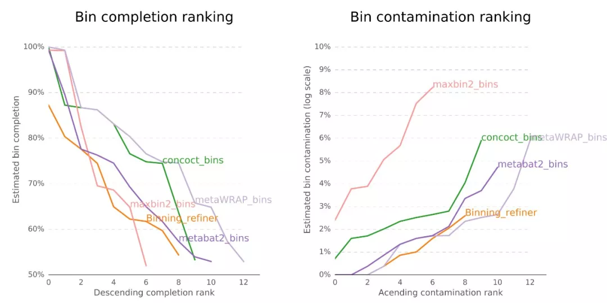
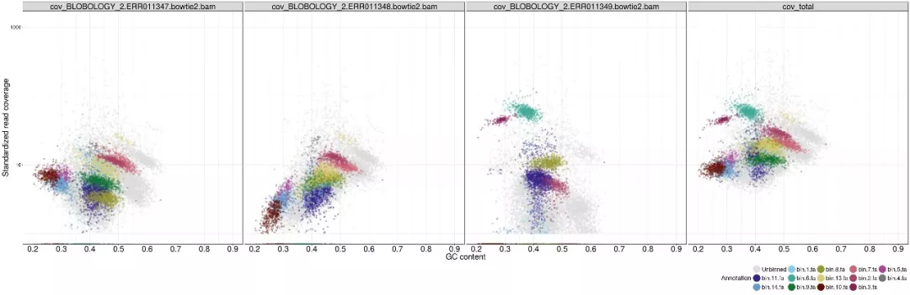

Introduction
上一篇里通过Metabat2了解了宏基因组分箱的关键步骤，这篇文章将介绍一个更全面的binning流程：MetaWRAP的具体使用方法。
MetaWRAP 是一个集成的宏基因组分析工具包，旨在简化和提高宏基因组数据的处理、分析和解释。它结合了多个独立的宏基因组分析工具，提供了一系列模块来处理从原始数据质控到基因组注释的各个步骤，侧重于宏基因组Binning。本质来说，MetaWRAP并不是一种新的binning方法，而是一个整合其他binning方法的refiner。
MetaWRAP的文章于2018年发表于Microbiome，软件主页：https://github.com/bxlab/metaWRAP，到今天也没有重大更新，但仍然可以比较流畅的使用。以下是metaWRAP的主要工作流程：

图中红色代表分析模块，绿色代表宏基因组数据，橙色代表中间文件，蓝色代表结果图表。
更详细的工作流程请查看官方细节图，还是非常复杂的。
modules
MetaWRAP的主要功能模块包括：
宏基因组数据预处理模块
- 质控Read_QC： read质控剪切和移除人类宿主
- 组装Assembly: 使用megahit或metaSPAdes拼接
- 物种注释Kraken: 对reads和contigs层面进行可视化
这几步不一定要在MetaWRAP的流程中完成，我们在做别的分析时可能已经做完了这几步，只需要将组装后的contigs拿去后续的Bin处理模块即可。
分箱Bin处理模块
- 分箱Binning: 利用MaxBin2, metaBAT2, 和CONCOCT三个软件分别分箱；
- 提纯Bin_refinement：对多种Bin结果评估和综合分析，获得更好的结果；
- 重组装Reassemble_bins：利用原始序列和评估软件二次组装，改善Bin的N50、完整度；
- 定量Quant_bins: 估计样品中每个bin的丰度并热图展示；
- 气泡图Blobology: blobplots可视化群体的contigs的物种和Bin分布；
- 物种注释Classify_bins: 对Bin物种注释；
- 基因注释Annotate_bins: 预测Bin中的基因功能。
MetaWRAP实战
软件，数据准备
- 安装
MetaWRAP的资源需求根据处理的数据量而有很大差异。由于许多使用的软件（KRAKEN 和 metaSPAdes 等）需要大量内存，作者建议使用 8 个以上内核和 64GB 以上 RAM。实际使用感觉要更多，Binning确实算是比较耗时耗算力的分析了。
MetaWRAP依赖超过140个软件，而且很多都是之前的老版本（python用的还是2.7），很容易引起与已经安装的软件冲突。 强烈推荐使用conda创建一个虚拟环境再安装。
conda可能也会比较慢，毕竟软件太多了，一定要耐心，装好了之后很多依赖软件也可以单拎出来使用；或者参考软件主页方法，先用conda装好mamba（可以认为是一个升级版的更快的conda），再用mamba去装MetaWRAP。
|
|
祝你安装顺利！
安装完成后可以看一下命令行参数：
|
|
- 配置数据库
conda安装软件并不带数据库，需要手动下载数据库，并设置数据库的位置。
主要大小和依赖模块如下：
| Database | Size | Used in module |
|---|---|---|
| Checkm | 1.4GB | binning, bin_refinement, reassemble_bins |
| KRAKEN | 192GB | kraken |
| NCBI_nt | 99GB | blobology, classify_bins |
| NCBI_tax | 283MB | blobology, classify_bins |
| Indexed hg38 | 34GB | read_qc |
这里的根据需求装就好了，如果不需要某个模块，就不需要下载对应的数据库。如果实验室已经有人下载过了最好设置软链接到自己目录并加可读权限即可，否则手动下载这些还是比较耗时的。
我们尽量把数据库放在一起比如~/db/下，方便管理和使用。
- CheckM 数据库
|
|
- Kraken 数据库
|
|
- NCBI_nt 数据库
NCBI_nt 是一个非冗余核酸序列数据库，用于BLAST搜索。
|
|
- NCBI 物种信息数据库
|
|
- 人类基因组 BMTAGGER 索引
BMTAGGER 是一个用于从宏基因组数据中去除宿主基因组序列的工具。我们将下载并索引人类基因组 hg38。
|
|
下载完自己需要的数据库后，使用which config-metawrap命令查找配置文件位置，配置文件为config-metawrap，然后再用vim修改这个配置文件中的数据库地址即可，比如：
|
|
- 示例数据
本文使用的示例数据和上一篇推文一致，来自https://zenodo.org/records/7818827，这是基于咖啡发酵系统研究的6个原始数据集生成的模拟数据集。
里面已经提供了双端fastq测序文件和组装好的contigs，我们直接下载下列链接即可：
|
|
把其中的双端fastq测序文件放在reads文件夹下，解压一下后缀改为.fastq。 组装好的contigs放在contigs文件夹下，把6个样本名写入到samplelist。
|
|
分箱Binning
假设我们已经完成了宏基因组数据预处理模块的内容，测序的reads已经质控并组装过了（也可以参考之前写的宏基因组分析流程）。我们从contigs开始进行binning分析：
|
|
- Binning模块的具体参数：
|
|
- 输出文件：
- concoct_bins，maxbin2_bins，metabat2_bins：三个目录为三种bin的结果
- work_files：三种bin分析所需要的文件，如不同格式的bin覆盖度或丰度信息。
- 运行情况（参考）：
- 单样本reads 一个文件（*.fastq）为600M，组装后的contig为100M
- 2核cpu，运行时间为1500s
- 平均内存占用1.1G，最大内存占用1.3G
- 结果 concoct_bins，maxbin2_bins，metabat2_bins分别有30，4，5个MAGs
提纯Bin_refinement
三种主流bin结果各有优缺点，我们需要对这些初步分箱结果进行进一步的提纯和优化。
我们可以把所有样本的结果添加样本名前缀后，合并在同一文件夹中，使用metaWRAP的bin_refinement模块来提纯分箱结果：
推荐(默认)使用完整度70，污染率10的阈值。要求越高，bin越少，请根据个人需要调整。这里的测序数据较小，仅使用50和10级别的阈值。
|
|
- Bin_refinement模块的具体参数：
|
|
- 输出文件：
- concoct_bins，maxbin2_bins，metabat2_bins：三个目录为三种bin在Refine后保留的结果
- concoct_bins.stats，maxbin2_bins.stats，metabat2_bins.stats：三个文件为三种bin在Refine后的统计信息
- metawrap_50_10_bins：提纯后的bin文件目录，包括最终的提纯bin。
- metawrap_50_10_bins.stats：提纯后的bin文件目录，包括最终的提纯bin。
- work_files：提纯过程中产生的中间文件。
- *.contigs：contigs
- figures：提纯过程中产生的图表。
- 运行情况（参考）：
- concoct_bins，maxbin2_bins，metabat2_bins输入分别有30，4，5个MAGs
- 4核cpu，运行时间为3926s
- 平均内存占用30GB，最大内存占用36GB
.stat文件包含每个bin的统计：完整性、污染率、GC含量、物种、N50、大小和来源:
|
|
figures里展示了提纯效果： 
重组装Reassemble_bins (可选)
重组装模块用于使用原始的宏基因组测序数据重新组装已经分箱的基因组草图。这个模块可以帮助提高基因组的连续性和完整性，进一步优化分箱结果。
reassemble_bins基于原始reads对结果优化，只有结果更优的情况，才对结果进行更新。
|
|
- Reassemble_bins模块的具体参数：
|
|
- 输出文件：
- reassembled_bins：重新组装过的基因组草图文件夹，包含了进一步优化和改进后的基因组序列。
- reassembled_bins.stats：重组装过程的总结文件，包含了每个基因组草图的改进信息和指标。
我没有跑这一步，用时一般比较久。
定量Quant_bins
在完成分箱和提纯步骤后，我们需要对各个bin进行定量分析，评估每个bin在不同样本中的相对丰度。 合并一下所有的contigs文件为all_contigs.fasta：
|
|
- Quant_bins模块的具体参数：
|
|
- 输出文件：
- bin_abundance_table.tab：每个样本中每个bin的相对丰度表格。
- assembly_index：salmon 给contigs建立的index。
- alignment_files：salmon 对每个样本进行定量后生成的文件。
- quant_files：salmon 提出的count文件。
- genome_abundance_heatmap.png：每个样本中每个bin的丰度热图。
- 运行情况（参考）：
- 单样本reads 一个文件（*.fastq）为600M，组装后的contig为100M，合格MAG一个bin为1.6M
- 4核cpu，运行时间为302s
- 平均内存占用2.8G，最大内存占用3G
- 结果 concoct_bins，maxbin2_bins，metabat2_bins分别有30，4，5个MAGs
- 一个MAG绘制热图失败，理论上会有下列丰度热图：
这个模块通过将reads映射回bin，并计算每个bin在不同样本中的覆盖度，从而定量分析每个bin的相对丰度。这样可以帮助我们了解各个微生物群体在不同样本中的分布和丰度变化。
气泡图Blobology
Blobology模块用于生成气泡图，以便可视化contigs或bins的GC含量与丰度的关系。这种可视化方法可以帮助我们识别和分离不同来源的序列，检测可能的污染，并了解样本中的微生物群体组成。
|
|
- Blobology模块的具体参数：
|
|
- 输出文件：
- blobplot.png：GC含量与丰度的气泡图。
- all_contigs.binned.blobplot：图表中数据点的详细信息，包括每个contig的GC含量、丰度和bin分配。
NT数据库实在太大了，我没有跑这个，看一下理论输出：
通过气泡图，我们可以直观地看到每个contig或bin的GC含量与其在样本中的丰度。不同来源的序列通常会显示出不同的GC含量和丰度模式，从而在图中形成不同的群体。这种可视化方法对于识别和去除样本中的污染序列以及了解样本的微生物群体结构非常有用。
物种注释Classify_bins
物种注释模块用于对提纯后的基因组bin进行分类学注释。这个过程可以帮助我们确定每个bin所属的物种或更高的分类层次，从而更好地理解样本中的微生物群落组成。
其实Bin提纯和重组装中，在checkM的stat文件中，就有物种的注释结果，但软件和数据库都不完善。基于NCBI_nt和NCBI_tax数据库，MetaWRAP使用 MEGABLAST和Taxator-tk 进行每条contig物种注释，再估计bin整体的物种。
另外物种注释可以使用GTDB-Tk和GTDB数据库，因为它专门针对微生物基因组的分类进行了优化，但也可以选择使用其他分类数据库，如Kraken。
|
|
- Classify_bins模块的具体参数：
|
|
- 输出文件：
- bin_taxonomy.txt：每个bin的分类信息，包括门、纲、目、科、属、种等分类层次。
- bin_quality.txt：每个bin的质量信息，包括完整性、污染度等（如果使用了
--run_checkm选项）。 - classification_plots：分类结果的可视化图表，展示各个bin在不同分类层次上的分布情况。
- work_files：分类分析过程中产生的中间文件。
NT数据库实在太大了，我也没有跑这个，我一般选择用GTDB-tk做物种注释。
基因注释Annotate_bins
基因注释模块用于对分箱结果中的基因组草图进行功能注释。这个模块通过多种数据库和工具，对基因组中的编码基因序列进行预测和注释，帮助我们理解微生物群体的功能特性。
MetaWRAP基于PROKKA进行基因预测和注释，调用Barrnap 预测rRNA，Aragorn预测tRNA。
|
|
- Annotate_bins模块的具体参数：
|
|
- 输出文件：
- bin_funct_annotations/*.gff：每个bin的注释GFF文件
- bin_translated_genes/*.faa：每个bin的翻译蛋白序列文件
- bin_untranslated_genes/*.fna：每个bin的未翻译蛋白序列文件
- prokka_out：Prokka预测结果原始文件
- 运行情况（参考）：
- 一个合格MAGbin，1.6M
- 4核cpu，运行时间为100s
- 平均内存占用0.15G，最大内存占用0.17G
基因注释的话我们还可以把MAGs的所有fasta序列合并起来，用prodigal统一预测基因并翻译为蛋白序列，然后用序列比对软件diamond比对各种功能数据库比如KEGG，Eggnog，CARD等进行注释整理，从而进行更深入的功能分析。
References
- Uritskiy, G. V., DiRuggiero, J., & Taylor, J. (2018). MetaWRAP—a flexible pipeline for genome-resolved metagenomic data analysis. Microbiome, 6(1), 158.
- https://github.com/bxlab/metaWRAP
- https://github.com/bxlab/metaWRAP/blob/master/Usage_tutorial.md
- https://mp.weixin.qq.com/s/Ecn4DOrhfUhz1HynbgQtnw
- https://mp.weixin.qq.com/s/WrbKYybTCKab3AUcSzUWqg
- https://blog.csdn.net/woodcorpse/article/details/118124686